Mac - Ruby woo
Come già avevo annunciato in pagina FB, oggi voglio parlarvi del mio primo MAC. .
E già, sono state fatte recensioni su recensioni, e anch'io voglio dare i miei pareri e impressioni su un rossetto tanto voluto. .
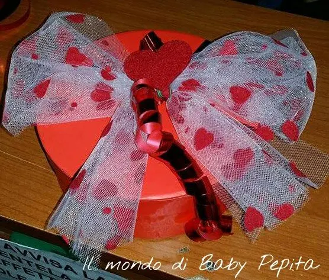
Questo è il pacchetto regalo in cui mi è stato regalato, potete già capire quanto volessi questo rossetto già da come mi è stato presentato ihihih
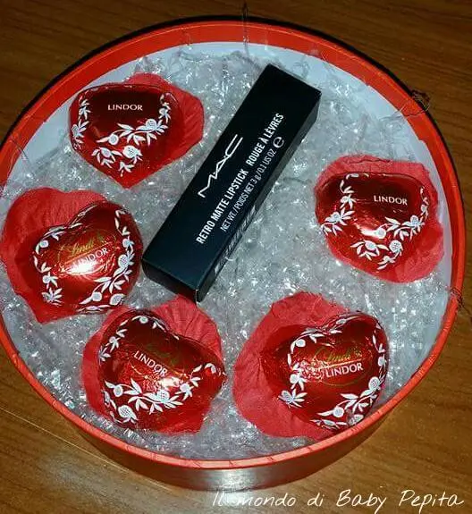
Era San Valentino, più o meno una decina di giorni fa, ed io la mia famiglia siamo soliti farci regali quasi fosse natale, di solito pensierini, ma stavolta mia sorella e mio cognato hanno spaccato di brutto facendomi questa grande sorpresa . .Vabbè vi risparmio i sorrisi di gioia e cose varie, passo direttamente allo spacchettamento ahahah
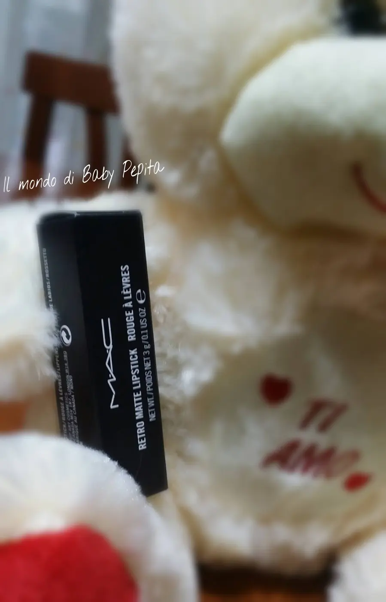
Di questo brand ho sempre adorato il semplice packaging, non è eccessivo ne accentuato negli anni ma presta più attenzione all'enorme gamma di colori e prodotti che offre. .
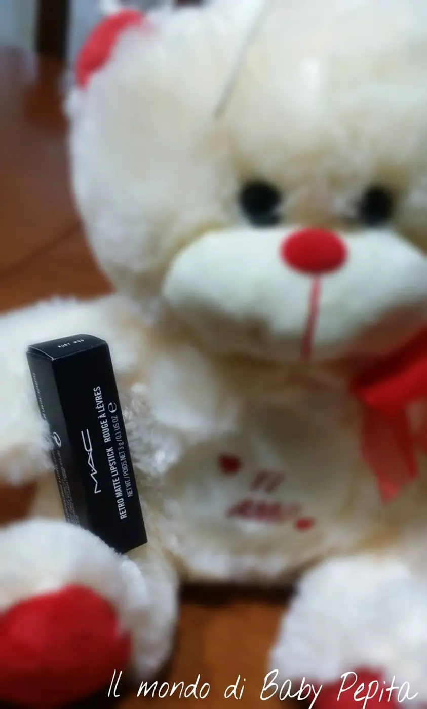
Acquistato in uno store Mac (Centro Campania con precisione) ma si può acquistare anche sul sito ufficiale allo stesso prezzo o nei Coin
Prezzo: 19,00 €
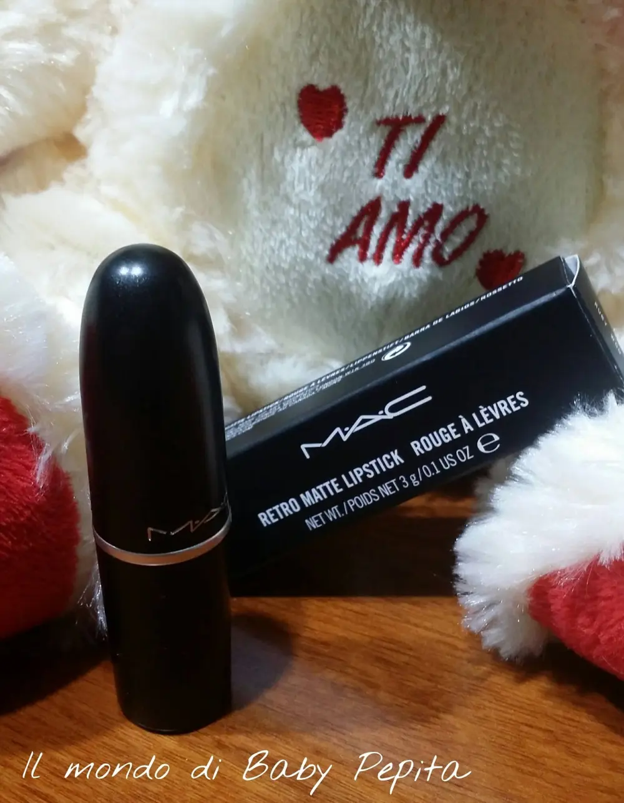
E' un best seller della Mac in assoluto per quanto riguarda i rossetti, mai passa di moda, soprannominati PROIETTILI i rossetti Mac da noi appassionate di makeup per la sua forma tondeggiante. .
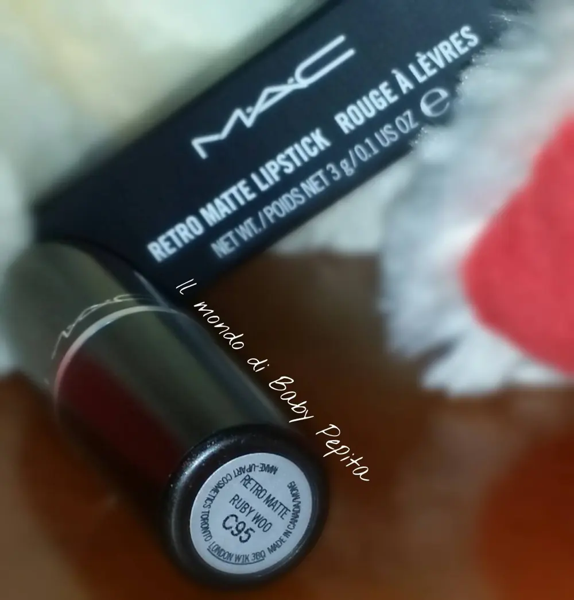
Si chiama Ruby Woo questo rosso vellutato totalmente opaco, appunto per questo un retro matte. .
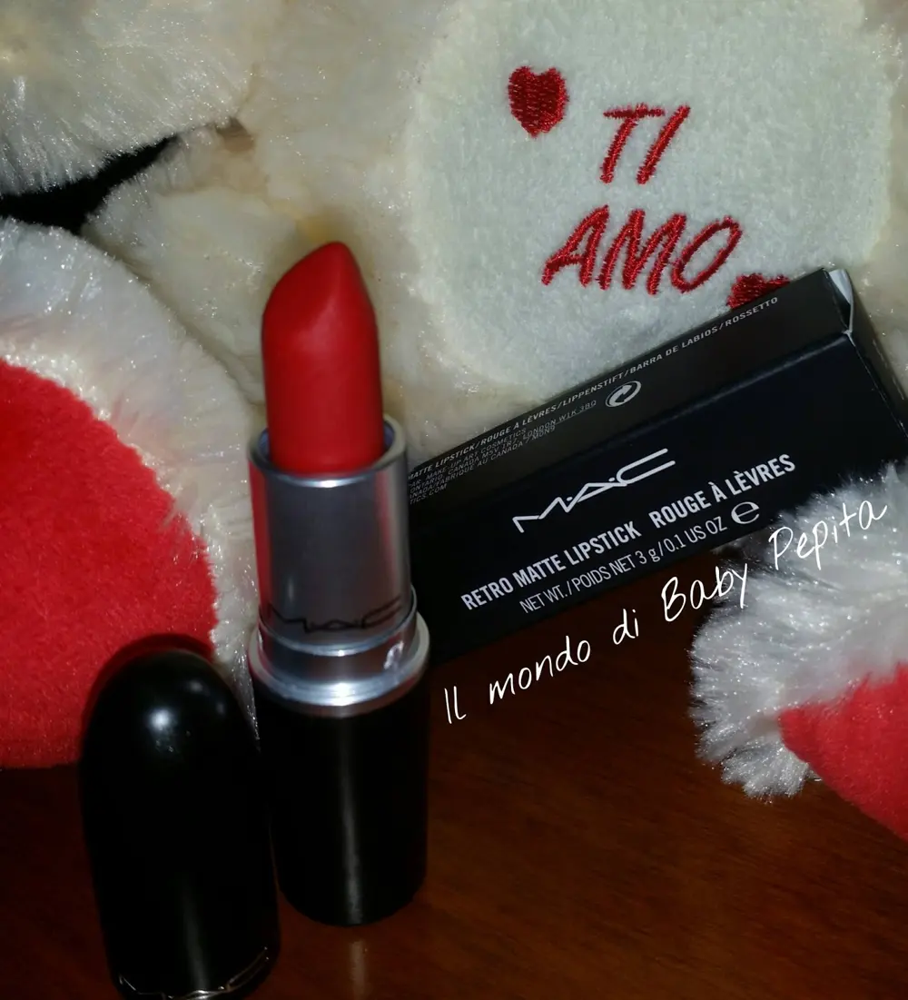
La foto fatta con il flash ci mostra questo rosso acceso, adatto sia sulle bionde che sulle more. .Un rosso non per questo facile da portare, anzi, con un rossetto così ci si sente anche fin troppo truccate, quindi da abbinare un leggero smoky eyes oppure anche solo rimmel ed eyeliner, tanto tutta l'attenzione state ben sicure che la catturerà lui. .Senza flash, e quindi anche indossato di sera, è così che si presenta, con un sottotono blu opaco. .
Passiamo alla prova vera e propria!
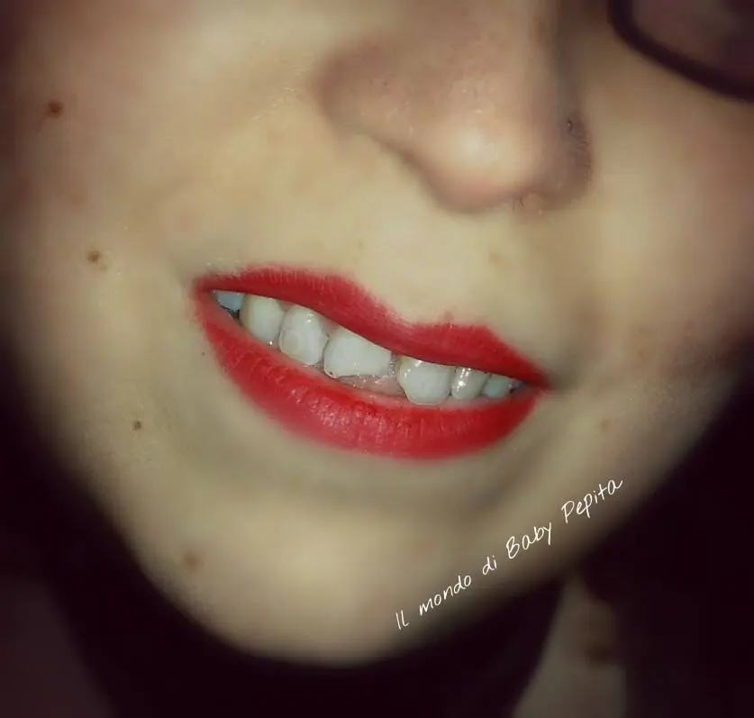
Per mettere questo rossetto non vi nego che la prima volta ho anche sbavato, ed io non sono solita farlo, quindi ha bisogno di un'accurata precisione, non a caso il più delle volte vedo mettere i Mac con i pennelli (so che è più per igiene ma anche per precisione sicuramente).
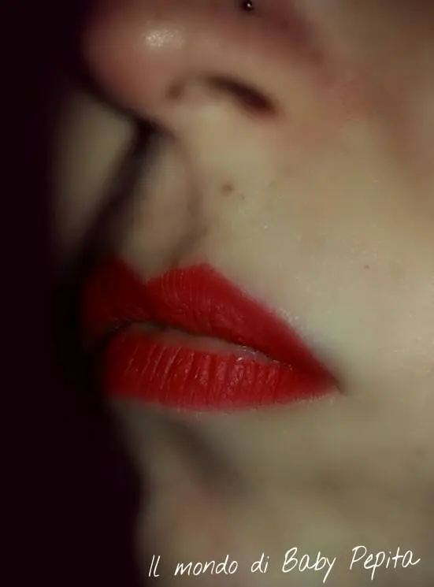
Attente ad idratare bene le labbra prima di indossarlo perchè essendo matte e un pò secco tende a mettere in evidenza le labbra poco idratate e quindi screpolate.
Durata: Ok, e qui ho le mie impressioni da dare, questo rossetto era a me noto non solo per la sua bellezza ma quanto per la sua durata, io vi dirò la mia, a me non ha suscitato tutto questo successo di durata, provato con matita, da solo e con primer ma niente l'effetto dopo alcune ore è come in questa foto qui sotto
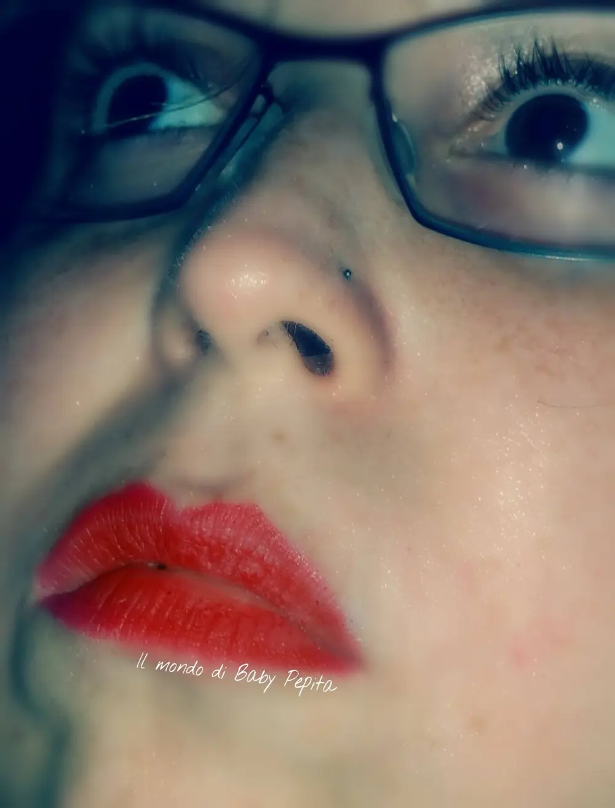
E non avevo mangiato qui, quindi non so forse sono io che non riesco a trattenere rossetti ma anche Mac mi fa questa cosa. Ma posso però dire che non si attacca facilmente al cibo e non segna facilmente i bicchieri.
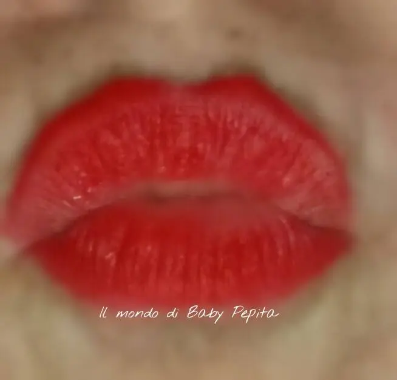
Tuttavia resta comunque uno dei rossetti rossi che ho che più mi piace, anche con questa piccola pecca su di me rientra lo stesso nella mia top ten.

In conclusione Ruby Woo di Mac è sicuramente un rossetto da "AVERE"per le amanti dei rossi. .
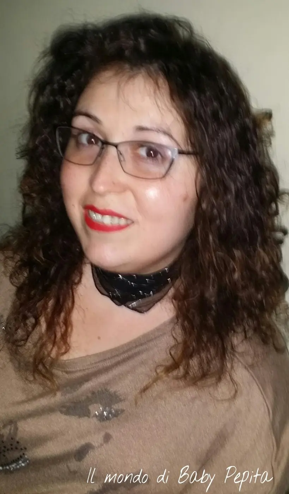
Scusate la foto sfocata, ma anche l'aspetto in questa foto ihihih
Ditemi la vostra opinione

Mi ha sempre colpito non so perchè già il packaging della Mac, elegante e semplice. .
Acquistato in uno store Mac, (al Campania Centro Commerciale con precisione),
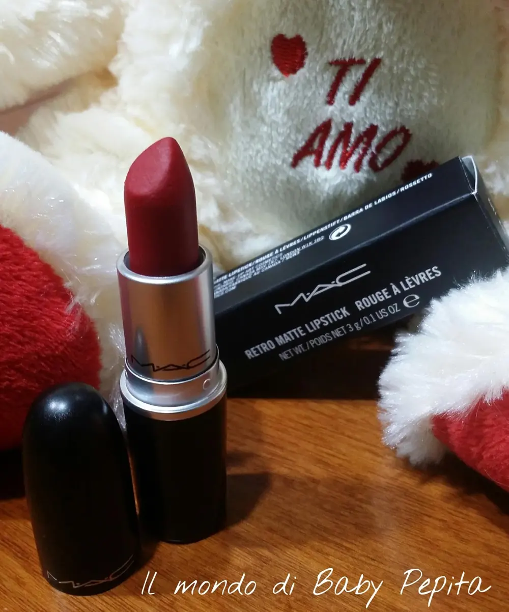